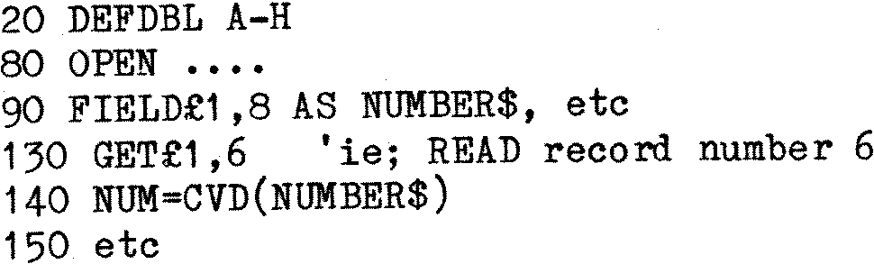
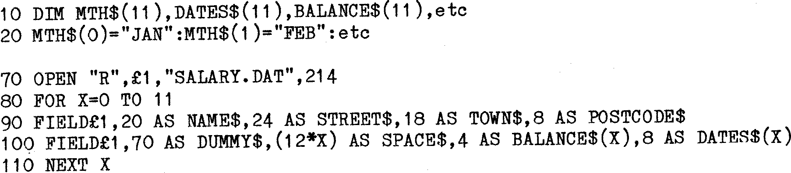

80-Bus News |
September–October 1983 · Volume 2 · Issue 5 |
| Page 20 of 67 |
|---|
There are also three special functions to extract numeric values from a Field string. They are:
| CVI | = Convert String to Integer number. |
| CVS | = Convert String to Single Precision number. |
| CVD | = Convert String to Double Precision number. |
For example:
Here record number 6 is read and the Field ‘NUMBER$’ is converted into a Double Precision value that is stored in variable ‘NUM’ for further processing. Note the declaration of the precision of numeric variables in 20. The main advantage of the use of CV and MK functions is that less space is required in the records, and on disk.
It is often necessary to store a lot of Data in the Fields of one Record. For example the amount spent per month on Petrol. It would be very tedious to have to type in something like ....., 4 AS JAN$, 4 AS FEB$ etc. (It is also convenient to restrict line lengths to less than 80 characters to allow as much use as possible of the extended screen editing features of SYS/Gemini CP/M). Fortunately it is possible to continue FIFLD statements on to several lines, and to use FOR-NEXT loops in their construction:–
This example is not so easy to understand.
| Line 20 | – | The names of the months are stored in an array so that they can be printed using a FOR-NEXT loop as desired later. |
| Line 70 | – | The file is OPEN’ed. It is assumed that it stores the Monthly salary and Date of payment for the person named in the record. The Record is 214 bytes long as will be shown. |
| Line 90 | – | Sets up Fields for the self evident bits of Data.There is not sufficient room in 90 to continue unless a non-screen editable line is entered. The Fields in line 90 occupy 70 bytes. |
| Line 100 | – | The first Field is a ‘dummy’ to ensure that all the Fields in line 100 start later than Fields in line 90. As long as no Data is LSET or RSET into the Field DUMMY$ then Data in the Fields of line 90 is not corrupted. SPACE$ is another dummy, used as described below. |
| Line 110 | – | Continue the loop until 12 ‘Balance’ and ‘DATE’ fields are set. |
| Page 20 of 67 |
|---|